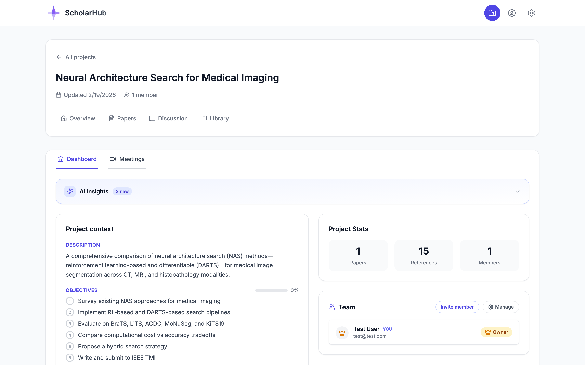
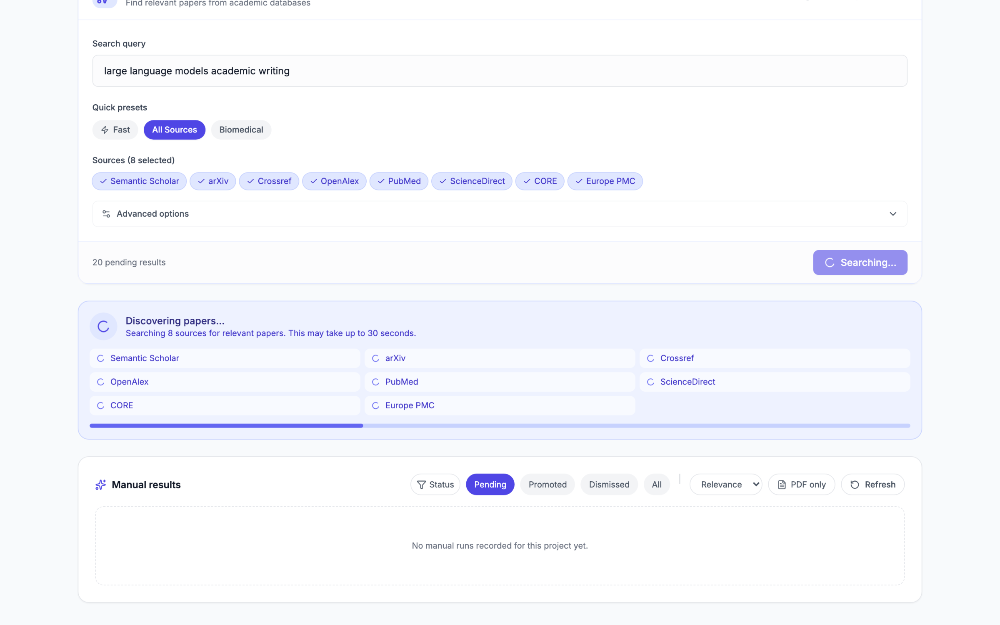
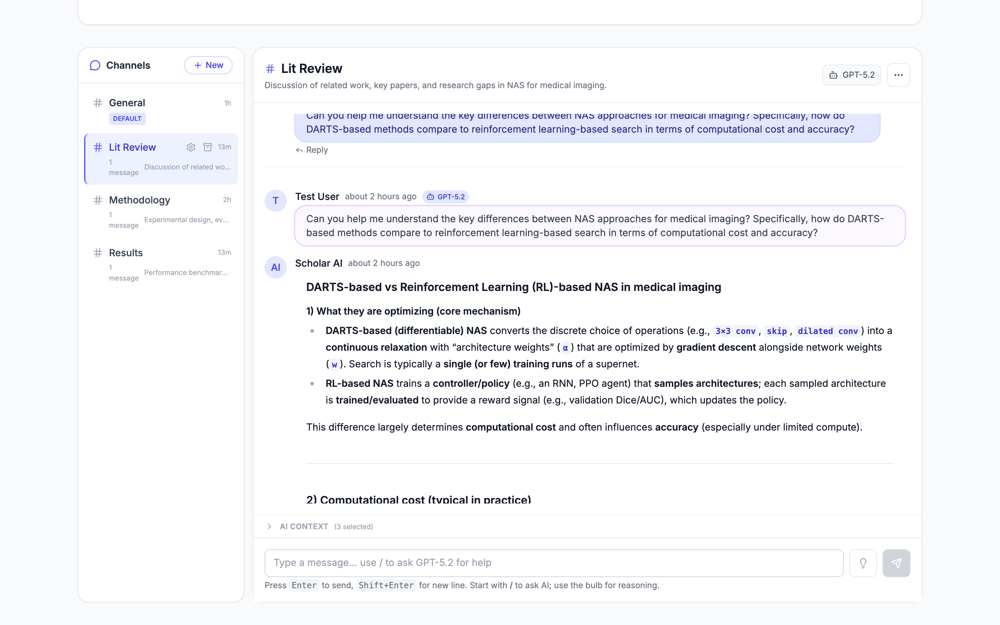
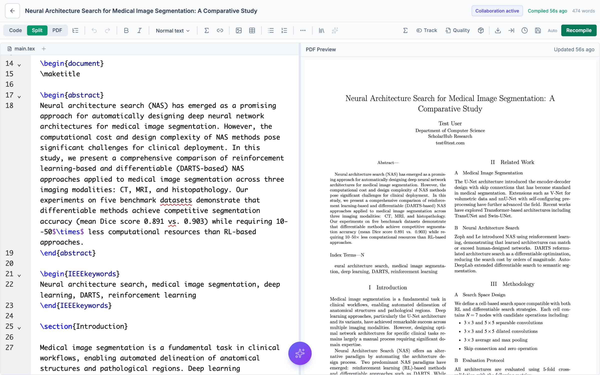

A project-scoped research workspace where the AI,
the library, and the editor know about each other.
Every tool holds a different slice of the same project — and none of them share context.
The integration is the product.
Not any single feature.
Any one of ScholarHub's tools exists elsewhere. What doesn't exist is a workspace where the editor can cite a paper the AI just discovered — because they share one project.
A researcher creates a project. Inside it: objectives, members, a paper library, discussion channels, LaTeX documents, and meeting transcripts — all visible to the same AI.
Every answer, edit, or search is grounded in your project's actual data.
Owner, Admin, Editor, Viewer — activity feeds and notifications out of the box.
Discussions and edits sync instantly across collaborators.

Everything below shares the same project context — so the AI, the editor, and your teammates all see the same state.
Nine databases, one query — deduped and ranked, not just concatenated.
Every result is saved to your project library with full citation metadata — authors, venue, DOI, abstract — already attached.
Results from all sources are merged, duplicates are collapsed, and the most relevant papers rise to the top.
Scan fast, or cast a wide net — your choice per query.
Plus minimum citation count, so the noise floor stays low.
Pending → Promoted → Dismissed. Clean triage, no tab-juggling.

A project-scoped assistant with real tools — not a chat bolted on the side.
Every message grounds on your saved papers, your discussion history, and your meeting transcripts — not just the last 10 turns of chat.
Lit Review · Methodology · Results — each keeps its own thread.
Branch the discussion without losing the main conversation.
Pick which papers to include before asking — explicit, not magic.
Citations resolve to real library entries — or the AI offers to search for one.

Instead of a single text generator, the assistant composes capabilities. It decides what to read, what to fetch, and what to draft — and it always reports what it used.
Different projects want different models. ScholarHub stays model-agnostic — each project picks the one that fits its work best.
Careful literature review and long reasoning chains.
Synthesis and writing when you want polish.
Long-context reading across multiple PDFs.
Cheap iteration — when cost matters more than polish.
When the next Claude or GPT drops, you switch in one click. You're never stuck with last year's model on the week your paper is due.
Real-time, collaborative — and the AI cites your actual library.
Real-time multi-file LaTeX with live PDF preview. Collaborators can edit simultaneously without conflicts.
main.tex + chapters + bib — the full tree, not a single buffer.
Incremental rebuilds with inline error reporting.
IEEE, ACM, Springer — ready to clone into any project.

Select a passage, ask for a rewrite or a "support this claim." The assistant reaches into your library, drafts the edit, and attaches the citation — bound to a real entry, not a fabricated one.
Each tool below is excellent in its lane. ScholarHub's claim is that the integration across lanes is where the value compounds.
| Capability | Overleaf | Zotero | Notion / Slack | ChatGPT | ScholarHub |
|---|---|---|---|---|---|
| Realtime multi-file LaTeX | ✓ | ✕ | ✕ | ✕ | ✓ |
| Cross-source paper discovery | ✕ | ~ | ✕ | ✕ | ✓ |
| AI grounded in your library | ✕ | ✕ | ✕ | ~ | ✓ |
| Citations bound to real papers (no hallucination) | n/a | n/a | ✕ | ✕ | ✓ |
| AI proposes edits that cite library | ✕ | ✕ | ✕ | ✕ | ✓ |
| Project-scoped discussion | ✕ | ✕ | ✓ | ✕ | ✓ |
Four questions we expect you to ask — with straight answers.
All major open and metered databases — one query, deduped across all of them.
Search · Library management · Authoring · Analysis — composed, not bolted on.
Projects, discovery, discussion AI, references library, collaborative LaTeX editor.
Four questions I need honest answers to — rough ones especially.
Or does it feel like a Swiss-army-knife pile of features?
Enough to paste them into your own paper — honestly.
For your next paper. If not, what's stopping you?
And does that weakness undermine the whole product?